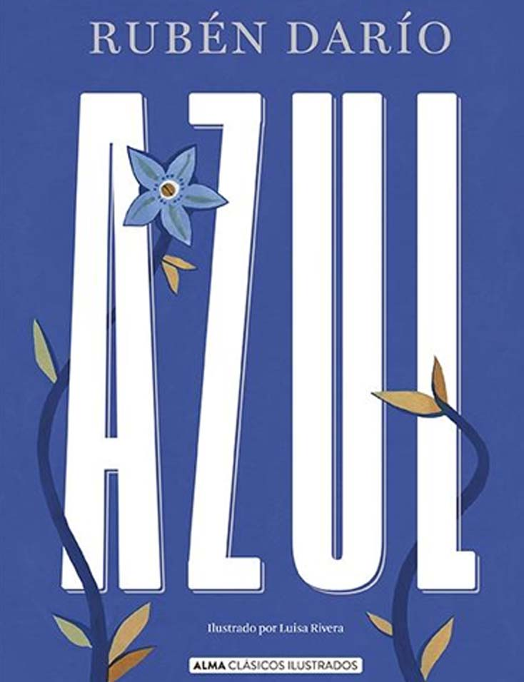

Azul
Rubén Darío
En esta obra fundamental para el desarrollo de la corriente modernista en el ámbito de las letras hispanas, RUBÉN DARÍO (1867-1916) aportó una nueva sensibilidad y una diferente concepción del arte, al tiempo que demostraba una extraordinaria capacidad para apropiarse y transformar en sustancia propia las influencias.
+ leer libro